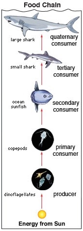
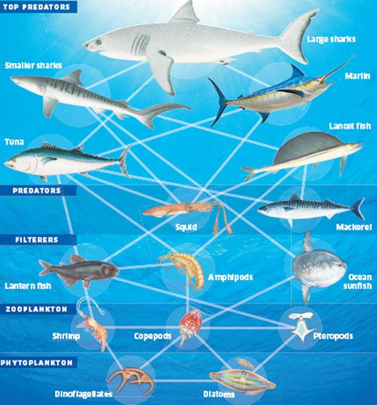

By Katie2

The tropical ocean biome contains all of the ocean between the Tropic of Cancer (north of the equator) and the Tropic of Capricorn (south of the equator). This includes the central portions of the Atlantic and Pacific oceans as well as most of the Indian Ocean. The tropical oceans are home to much of Earth’s biodiversity.
Food Chains & Webs
Two examples of tropical ocean food chains and food webs include:

